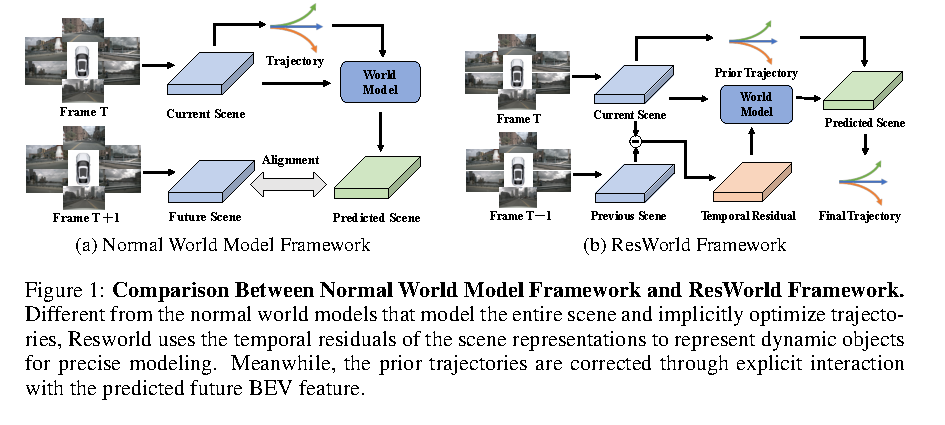
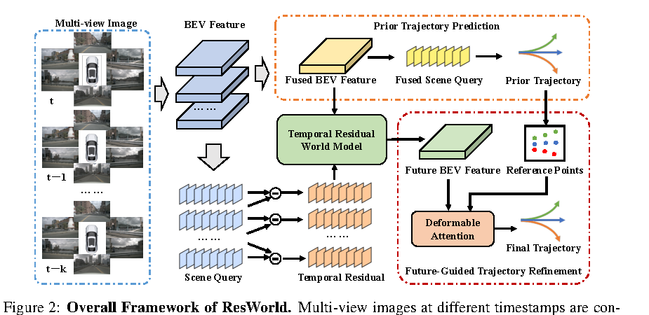
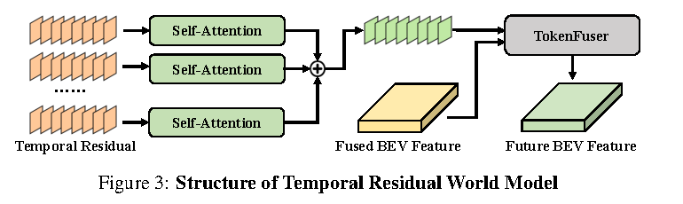
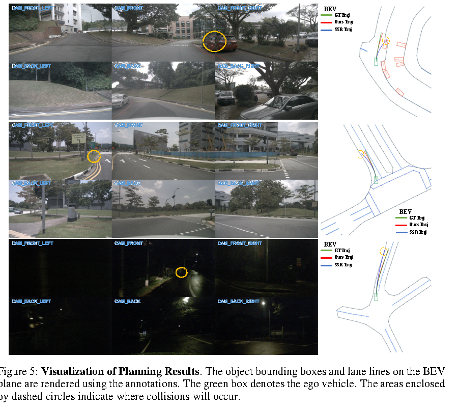

一句话总结
ResWorld 用 temporal residual 表示场景中真正变化的动态对象，让 world model 避免重复预测静态背景； 同时通过 Future-Guided Trajectory Refinement 让 future BEV features 直接参与轨迹修正。
论文要解决的问题
很多 end-to-end autonomous driving world model 会把 future scene prediction 当作 proxy task， 用未来场景建模增强规划能力。但作者认为已有 world model 有两个明显浪费：
- 静态区域重复建模：道路、建筑、地面等大部分 BEV 信息在短时间未来里变化很小，不需要 world model 反复预测。
- 动态对象建模不足：真正影响规划的是车辆、行人等动态对象，但它们不容易在不依赖检测/跟踪辅助任务的情况下被显式抽出。
- 未来特征和轨迹交互太浅：很多方法把 future prediction 当辅助 loss，轨迹并没有显式从 future BEV 中检查碰撞和可行区域。

创新点怎么理解
Temporal residual for dynamics
对齐历史 BEV 到当前坐标系后，计算相邻时间的 sparse scene query residual。 残差主要对应同一空间位置随时间变化的信息，因此能突出动态对象。
Current-coordinate future BEV
未来 BEV 仍用当前 BEV 坐标系表示，这样静态区域可以直接由当前 BEV 保留， world model 只需要补动态对象的未来分布。
TR-World
Temporal Residual World Model 只输入 temporal residual，经 self-attention 聚合动态信息， 再用 TokenFuser 把动态未来分布展开回 BEV feature。
FGTR
Future-Guided Trajectory Refinement 让 waypoint queries 以 prior trajectory 为 reference points 去 future BEV 中采样，从而修正碰撞或偏离 drivable area 的轨迹。
ResWorld 把 world model 的目标从“预测整个未来”改成“预测当前决策真正缺的动态残差信息”。 这是一个很工程、也很规划导向的设计。
整体框架

Multi-view images at t, t-1, ..., t-k
↓
GeoBEV extracts BEV features and aligns them to current coordinates
↓
Prior branch: fused BEV → scene queries → prior trajectory
↓
World model branch: temporal residuals → TR-World → future BEV feature
↓
FGTR: prior trajectory as reference points + future BEV feature
↓
final trajectoryTemporal Residual Extraction
ResWorld 先把当前和历史 BEV features 都变换到当前帧 B_t 的坐标系下，
得到 {B_t, B_{t-1}, ..., B_{t-k}}。因为坐标系一致，同一空间位置的差异主要来自运动物体。
论文先用融合 BEV B_fuse 生成一个 spatial attention map，强调动态区域。
对每个 timestamp 的 BEV feature 提取 sparse scene queries：
S_i = AvgPool(SA(B_fuse) ⊙ B_i)然后对相邻时刻的 scene queries 做差，得到 temporal residuals：
{R_t, R_{t-1}, ..., R_{t-k+1}}直观理解：如果某个区域是静态建筑或道路，残差应该小；如果是移动汽车、行人或自车附近的动态障碍，残差会显著。
TR-World：只建模动态残差

TR-World 的输入不是完整 BEV，而是 temporal residuals。每个 residual 先经过 self-attention， 再跨时间累加得到动态对象的未来表示：
R_hat = Σ SelfAttention(R_i)
然后用 TokenFuser 把 R_hat 展开回 BEV feature，并加回静态背景 B_fuse：
B_future = TokenFuser(R_hat, B_fuse) + B_fuse这个设计的含义是：静态部分由当前 BEV 继承，动态部分由 residual world model 更新。
FGTR：用 Future BEV 显式修正轨迹
Prior trajectory 先由 waypoint queries 和 fused scene queries 解码得到。FGTR 再把 prior trajectory 当作 future BEV 上的 reference points，让 waypoint queries 通过 deformable attention 读取未来场景信息：
W = DeformAttention(W, B_future, T_prior)
T_final = MLP(W)这样每个未来时间点的 waypoint query 可以检查：沿着 prior trajectory 走，附近是否有动态障碍、是否离开可行驶区域。 因而 FGTR 不是“间接提升表示”，而是把 future BEV 直接用到 trajectory refinement。
作者不使用真实未来 BEV 对 B_future 做 dense supervision。
理由是 t+1 的真实未来监督会让 future BEV 只对应某个单一时间戳，反而丢掉跨多个未来时刻的动态分布。
FGTR 的 reference points 给了 sparse spatio-temporal supervision，可以缓解 world model collapse。
实验结果
ResWorld‡ Avg L2，低于 SSR∗‡ 的 0.39
ResWorld‡ Avg Collision Rate
ResWorld♢‡ Avg L2
ResWorld Det&Map PDMS
ResWorld⋆ PDMS
nuScenes open-loop planning
| 方法 | Auxiliary Task | Avg L2 ↓ | Avg Collision ↓ |
|---|---|---|---|
| SSR∗‡ | None | 0.39 | 0.15 |
| LAW‡ | None | 0.61 | 0.30 |
| Drive-OccWorld‡ | Occ | 0.47 | 0.11 |
| DiffusionDrive‡ | Det&Track&Map&Motion | 0.57 | 0.08 |
| ResWorld‡ | None | 0.35 | 0.07 |
| ResWorld♢‡ | None + ego status | 0.30 | 0.06 |
NAVSIM closed-loop planning
| 方法 | Auxiliary Task | NC ↑ | DAC ↑ | TTC ↑ | EP ↑ | PDMS ↑ |
|---|---|---|---|---|---|---|
| LAW | None | 96.4 | 95.4 | 88.7 | 81.7 | 84.6 |
| World4Drive | None | 97.4 | 94.3 | 92.8 | 79.9 | 85.1 |
| DiffusionDrive | Det&Map | 98.2 | 96.2 | 94.7 | 82.2 | 88.1 |
| ResWorld | Det&Map | 98.2 | 96.4 | 98.9 | 82.5 | 88.3 |
| ResWorld⋆ | Det&Map + historical frame | 98.9 | 96.5 | 95.6 | 83.1 | 89.0 |
消融实验
TR-World 与 FGTR 是否有效
| Ego Status | TR-World | FGTR | Avg L2 ↓ | Avg Col. ↓ |
|---|---|---|---|---|
| 否 | 否 | 否 | 0.71 | 0.31 |
| 否 | 是 | 是 | 0.65 | 0.23 |
| 是 | 否 | 否 | 0.65 | 0.28 |
| 是 | 是 | 否 | 0.61 | 0.25 |
| 是 | 否 | 是 | 0.61 | 0.22 |
| 是 | 是 | 是 | 0.59 | 0.17 |
Normal WM vs TR-World，以及是否需要 Future Supervision
| World Model | Future Supervision | Avg L2 ↓ | Avg Col. ↓ | 解读 |
|---|---|---|---|---|
| Normal World Model | 是 | 0.61 | 0.23 | 预测完整场景，静态建模冗余 |
| Normal World Model | 否 | 0.61 | 0.21 | future supervision 影响有限 |
| TR-World | 是 | 0.61 | 0.21 | t+1 dense supervision 反而限制时序分布 |
| TR-World | 否 | 0.59 | 0.17 | 依靠 FGTR sparse spatio-temporal supervision 最好 |

局限与疑问
- 潜在动态对象难处理：论文自己承认，TR-World 对已经有运动的动态对象敏感，但对潜在动态对象，如行人、停靠车辆，不能充分通过 temporal residual 捕获。
- 依赖高质量 BEV 对齐：temporal residual 成立的前提是不同时间 BEV 已经被准确对齐到当前坐标系，因此底层 BEV 几何质量很关键。
- future BEV 无 dense GT supervision：这是创新点也是风险点。模型靠 FGTR 的稀疏监督避免 collapse，但 future BEV 表示到底学到什么仍然不完全可解释。
- NAVSIM 对历史帧设置不完全统一：论文为公平比较做了 agent query 替代 temporal residual 的设置；完整 ResWorld⋆ 使用 historical frame，比较时要说明配置差异。
值得学习的地方
- 不要让 world model 盲目预测整个未来，先问“哪些未来信息对规划真正缺失”。
- 静态背景可以直接继承，动态变化才是短时规划最需要建模的部分。
- future representation 最好直接参与 trajectory refinement，而不是只做辅助 loss。
- 防止 world model collapse 不一定要 dense future GT，轨迹 reference points 也可以形成稀疏时空监督。